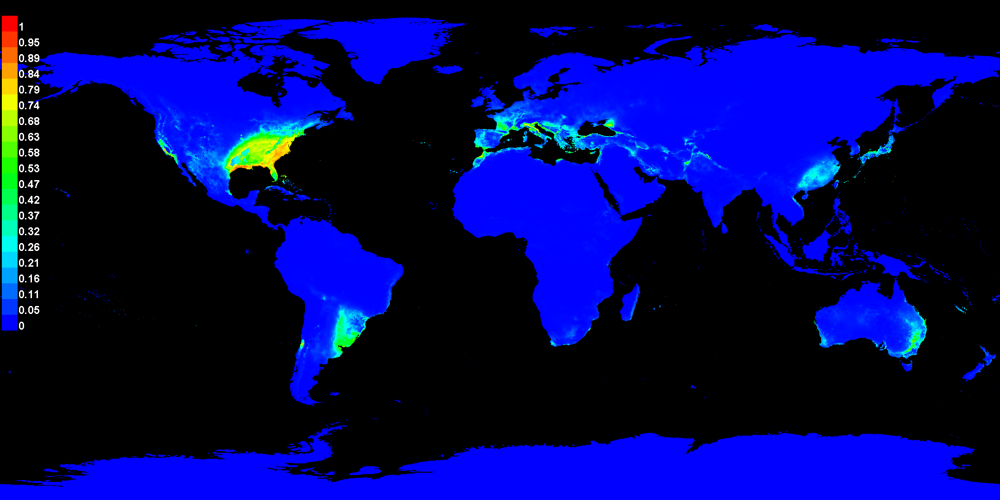
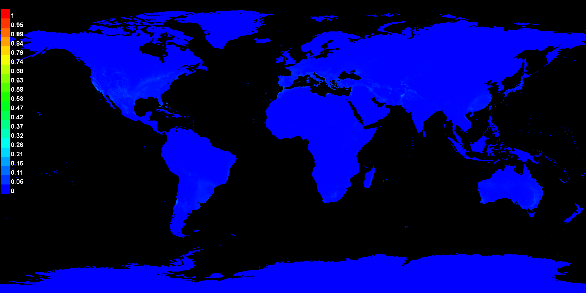

Replicated maxent model for Trachemys_scripta_scripta
This page summarizes the results of 20 bootstrap models for Trachemys_scripta_scripta, created Thu Mar 13 23:18:56 GMT 2025 using Maxent version 3.4.4. The individual models are here: [0] [1] [2] [3] [4] [5] [6] [7] [8] [9] [10] [11] [12] [13] [14] [15] [16] [17] [18] [19]
Analysis of omission/commission
The following picture shows the training omission rate and predicted area as a function of the cumulative threshold, averaged over the replicate runs.

The next picture is the receiver operating characteristic (ROC) curve for the same data, again averaged over the replicate runs. Note that the specificity is defined using predicted area, rather than true commission (see the paper by Phillips, Anderson and Schapire cited on the help page for discussion of what this means). The average training AUC for the replicate runs is 0.968, and the standard deviation is 0.000.

Pictures of the model
The following two pictures show the point-wise mean and standard deviation of the 20 output grids. Other available summary grids are min, max, median and 95% confidence level (lowerci).


The following two pictures show the point-wise mean and standard deviation of the 20 models applied to the environmental layers in 2041-2060 (SSP2-4.5). Other available summary grids are min, max, median and 95% confidence level (lowerci).
_avg.png)
_stddev.png)
Analysis of variable contributions
The following table gives estimates of relative contributions of the environmental variables to the Maxent model. To determine the first estimate, in each iteration of the training algorithm, the increase in regularized gain is added to the contribution of the corresponding variable, or subtracted from it if the change to the absolute value of lambda is negative. For the second estimate, for each environmental variable in turn, the values of that variable on training presence and background data are randomly permuted. The model is reevaluated on the permuted data, and the resulting drop in training AUC is shown in the table, normalized to percentages. As with the variable jackknife, variable contributions should be interpreted with caution when the predictor variables are correlated. Values shown are averages over replicate runs.
| Variable | Percent contribution | Permutation importance |
|---|
| bio_17 | 32 | 21.3 |
| bio_14 | 20.2 | 0.2 |
| bio_5 | 12.5 | 4.5 |
| bio_4 | 11.8 | 2.4 |
| bio_19 | 10.9 | 8.4 |
| bio_3 | 2.1 | 2.2 |
| bio_10 | 1.6 | 49.8 |
| bio_2 | 1.2 | 0.7 |
| bio_7 | 1.2 | 0.1 |
| bio_9 | 1.2 | 2.3 |
| bio_18 | 1.1 | 2.3 |
| bio_6 | 1.1 | 0.3 |
| bio_1 | 0.8 | 0.4 |
| bio_8 | 0.5 | 0.3 |
| bio_11 | 0.5 | 0.3 |
| bio_16 | 0.4 | 0.9 |
| bio_12 | 0.4 | 1.5 |
| bio_13 | 0.4 | 1.8 |
| bio_15 | 0.1 | 0.3 |
The following picture shows the results of the jackknife test of variable importance. The environmental variable with highest gain when used in isolation is bio_17, which therefore appears to have the most useful information by itself. The environmental variable that decreases the gain the most when it is omitted is bio_10, which therefore appears to have the most information that isn't present in the other variables. Values shown are averages over replicate runs.

Command line to repeat this species model: java density.MaxEnt nowarnings noprefixes -E "" -E Trachemys_scripta_scripta jackknife "outputdirectory=C:\Users\we24270\OneDrive - University of Bristol\Documents\2. Course (EMDA)\5. TB2\3. GEOGM0013\2. Summative\7. MaxEnt Output\2. Attempt 2 (30,000 + 20)\7. Future Climate - YBS Global SucReprod" "projectionlayers=C:\Users\we24270\OneDrive - University of Bristol\Documents\2. Course (EMDA)\5. TB2\3. GEOGM0013\2. Summative\6. Climate\2041-2060 (SSP2-4.5)" "samplesfile=C:\Users\we24270\OneDrive - University of Bristol\Documents\2. Course (EMDA)\5. TB2\3. GEOGM0013\2. Summative\2. Data\2. Custom Datasets\1. Species Distribution\yellow_bellied_global_dist_evid_repro.csv" "environmentallayers=C:\Users\we24270\OneDrive - University of Bristol\Documents\2. Course (EMDA)\5. TB2\3. GEOGM0013\2. Summative\6. Climate\Modern climate" randomseed maximumbackground=30000 replicates=20 replicatetype=bootstrap